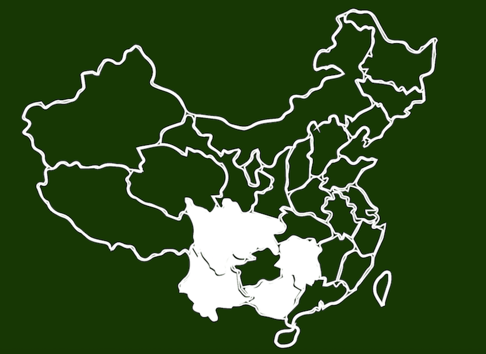
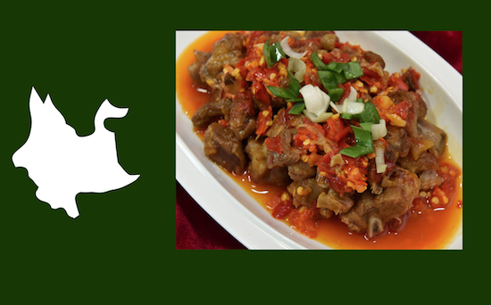
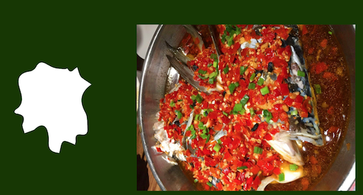
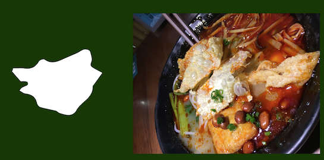

TASTE CHINA
My Recommendation:

Province: Sichuan
Signature Dish: Spicy Mixed Beef
And More:

Province: Yunnan
Signature Dish: Yunnan Ribs
Province: Hunan
Signature Dish: Pepper Fish head

Province: Guangxi
Signature Dish: River Snails Rice Noodle

(Click to see where you can find it in NY)